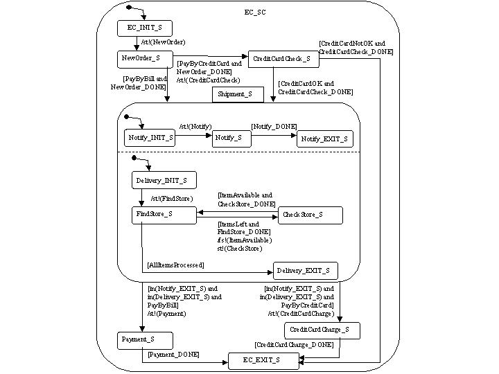
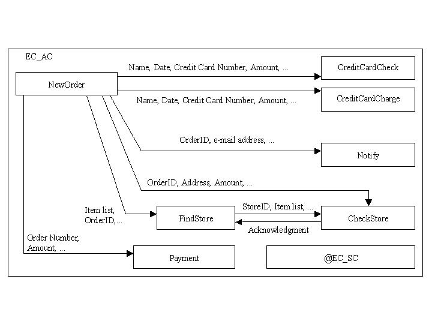

The Benchmark Workflow
Our benchmark workflow is based on the TPC-C order-entry benchmark for transaction systems [1], with the key difference that we combine multiple transaction types into a workflow and further enhance the functionality (see [2] for a full description of this workflow).
Figures 1 and 2 show the workflow specification as a state and activity chart, a formalism [3,4] that has been adopted for the behavioral dimension of the UML industry standard and is used in our prototype system Mentor-lite [5,6]. Each state in Figure 1 corresponds to an activity in Figure 2 or one (or multiple, parallel) subworkflow(s), except for initial and final states. We assume that for every activity act the condition act_DONE is set to true when act is finished.
|
 |
 |
| Figure 1: State Chart. | Figure 2: Activity Chart. |
;location.reload();){kind=link}
;location.reload();){kind=link}
The workflow proceeds as follows. Initially, the NewOrder activity is started. After the termination of NewOrder, the control flow branches. If the customer wants to pay by credit card, the condition PayByCreditCard is set and the CreditCardCheck activity checks the validity of the credit card. If there are problems with the credit card, the workflow is terminated. Otherwise the shipment, represented by the nested top-level state Shipment_S, is initiated spawning two orthogonal/parallel subworkflows. The first subworkflow has only one activity that sends a notification mail. The second subworkflow (sequentially) invokes for each ordered item an activity that identifies a store from which the item could be shipped. Then, a second activity instructs the store to deliver the item and waits for an acknowledgement. The two activities FindStore and CheckStore are repeated within a loop over all ordered items. After the termination of both subworkflows, the control flow is synchronized, and branches again depending on the mode of payment. The workflow terminates in the state EC_EXIT_S.
References
[1] Transaction Processing Performance Council (TPC).
[2] M. Gillmann, R. Mindermann, G. Weikum: Benchmarking and Configuration of Workflow Management Systems, in Proceedings of International Conference on Cooperative Information Systems (CoopIS), Eilat, Israel, 2000.
[3] D. Harel: State Charts: A Visual Formalism for Complex Systems, Science of Computer Programming 8, 1987.
[4] D. Harel, E. Gery: Executable Object Modeling with Statecharts, IEEE Computer 30:7, 1997.
[5] D. Wodtke, G. Weikum: A Formal Foundation For Distributed Workflow Execution Based on State Charts, in Proceedings of International Conference on Database Theory (ICDT), Delphi, Greece, 1997.
[6] P. Muth, D. Wodtke, J. Weissenfels, G. Weikum, A. Kotz Dittrich: Enterprise-wide Workflow Management based on State and Activity Charts, in: A. Dogac, L. Kalinichenko, M.T. Ozsu, A. Sheth (Eds.): Workflow Management Systems and Interoperability, NATO Advanced Study Institute, Springer, 1998.